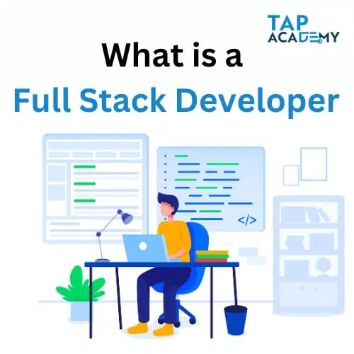

What is a Full Stack Developer?
A software engineer that is proficient in both front-end and back-end programming is known as a full-stack developer. They have experience dealing with a variety of web development technologies, such as HTML, CSS, JavaScript, databases, servers, APIs, and frameworks, among others.
Let’s take the building of a Facebook-like social media platform as an example. The front-end and back-end of the application would be built by a full-stack developer focusing on this project.
In order to generate the platform’s visual elements, the developer would design the user interface on the front end using tools like HTML, CSS, and JavaScript. Additionally, they would leverage front-end frameworks like React or Angular to speed up the development process.
In order to manage the data and process requests, the developer would write the server-side code using tools like Node.js and PHP. To store user data and other data, they would also employ databases like MySQL or MongoDB.
The integration of APIs (Application Programming Interfaces) for functions like authentication, messaging, and notifications would also fall within the purview of a complete stack developer.
The full-stack developer may make sure that all parts are flawlessly linked and work together as an integrated unit by working on both the front-end and back-end of the social media platform. Because of the wide breadth of technical knowledge and problem-solving skills required, full-stack developers are in high demand in the software development sector.
Why Full Stack Developers are in high demand?
There is a great need for full-stack developers for a number of reasons:
Versatility:
Full-stack developers are very versatile and able to handle a variety of tasks within a team because they have the knowledge to work on all facets of a web application.
Cost-effectiveness:
For a business, engaging a full-stack developer may be more affordable than hiring a number of specialists to work on various aspects of a web application.
Efficiency:
Full-stack developers can work more quickly since they can manage several facets of a project on their own, without the assistance of other team members.
High demand:
The US alone has over 33,000 full-stack developer job vacancies, with an average compensation of over $110,000 per year, according to Indeed. Full stack development is an extremely alluring job choice due to the high demand and good pay.
Start-up culture:
As start-up cultures have developed, there is now a greater need for full-stack developers because they can do numerous responsibilities in a smaller team, which makes them perfect for start-up settings.
Responsibilities of a Full stack developer
A Full Stack Developer’s responsibilities can change based on the project and organization they are working on. However, Full Stack Developers frequently handle the following tasks:
1.Web application creation and upkeep:
Full Stack From the front end to the back end, developers are in charge of designing, creating, and managing online applications. To produce a seamless user experience, they collaborate with a variety of programming languages, frameworks, and technologies.
2.Collaborating closely with cross-functional teams:
To make sure the web application is meeting business and user needs, Full Stack Developers collaborate with cross-functional teams that include designers, product managers, and other developers.
3.Software implementation and testing:
Full Stack Developers are in charge of putting software solutions into practice and testing them to make sure they work as intended. To ensure accuracy and quality, they employ a variety of testing frameworks and techniques.
4.Debugging and troubleshooting problems:
Full Stack Developers are in charge of finding and fixing problems with web applications. To identify issues and create workable solutions, they employ debugging tools and methods.
Skills Required for Full Stack Development
One needs to have a broad range of technical abilities, including knowledge of both front-end and back-end programming, to become a full-stack developer. Some of the essential competencies needed for Full Stack Development include:
Understanding of back-end development is also essential for Full Stack Developers, who must be well-versed in server-side programming languages like Node.js or PHP and databases like MySQL or MongoDB.
The ability to create and integrate APIs, which are necessary for connecting various components of a web application, is a requirement for Full Stack Developers.
Controlling versions: Full Stack Since version control tools like Git are used to manage and track changes in the codebase, developers need to be knowledgeable in these programs.
Full Stack Developers must have good problem-solving and troubleshooting abilities in order to recognize and fix problems with online applications.
Advantages of being a Full Stack Developer
1.Flexibility in the workplace:
Full Stack Developers are versatile and capable of handling many tasks within a team because they can work on both front-end and back-end development. More employment opportunities and increased job flexibility may result from this.
2.Great demand:
Due to their broad skill set and capacity to manage various areas of a web application, full-stack developers are in great demand. More employment prospects and higher pay may result from this.
3.Enhanced productivity:
Full Stack Developers can work more quickly because they can manage several parts of a project on their own, without the assistance of other team members. Faster development timelines and more productivity may result from this.
4.Improved web development knowledge:
Full Stack Developers have a thorough understanding of both front-end and back-end development, which enables them to design more thorough solutions and make more educated decisions.
Increased project control:
Full Stack Developers have the capacity to oversee all facets of a project, from inception to deployment, which can result in a better sense of ownership and control over the finished product.
Disadvantages of Working as a Full-Stack Developer
Continuous learning and skill development are necessary for Full Stack Developers to stay current with the ever-changing technology landscape. A large time and effort commitment may be necessary for this.
Full Stack Development is a dynamic field that constantly changes as new technologies and frameworks are developed. Maintaining current with the newest trends and best practices can be difficult as a result.
Technologies get dated quickly, therefore Full Stack Developers must constantly adapt to new ones. Full Stack Technologies may become antiquated soon.
Added stress: Full Stack Developers frequently work on intricate and important projects, which can lead to a stressful work atmosphere.
Due to the strong demand for Full Stack Developers and the requirement for ongoing education, there is a danger of burnout and stress from the profession.
Steps to Become a Full-Stack Developers
A varied set of technical abilities and a dedication to lifelong learning and development are necessary to become a Full Stack Developer. To become a Full Stack Developer, follow these steps:
1.Pick a career path:
A career in full-stack development might follow a variety of distinct pathways. Online courses, coding boot camps, and computer science degrees are a few popular educational and training options.
2.Choose a front-end technology:
Full Stack front-end technologies to learn Front-end frameworks like React or Angular, as well as front-end technologies like HTML, CSS, and JavaScript, must be mastered by developers.
3.Learn back-end technologies:
In addition to having a solid grasp of front-end programming, Full Stack Developers should also be knowledgeable about server-side languages like Node.js or PHP and databases like MySQL or MongoDB.
4.Create a portfolio:
To demonstrate their abilities and experience to potential employers, Full Stack Developers should create a portfolio of projects.
Gain practical experience:
Full Stack Developers should look for chances to work on real projects, including internships or side jobs. They will be able to expand their portfolio and grow their talents as a result.
Continuous learning and development:
are essential for Full Stack Developers to stay current with the most recent technology and best practices because the sector is rapidly growing.
Career Opportunities for Full Stack Developers
There are numerous employment options open to full Stack Developers, including:
1.Full Stack Developer:
Working on both the front-end and back-end of web applications is the most obvious job for a Full Stack Developer.
2.Web Developer:
Web Developers often work on the front end of web applications and are experts in creating and maintaining websites.
3.Software Engineer:
The design, development, and testing of software programs, especially web applications, are the province of software engineers.
Mobile Application Developer:
Those that construct and maintain mobile applications are known as mobile application developers. They frequently work on both the front-end and back-end of these applications.
DevOps Engineer:
DevOps Engineers often work on the back end of online sites and are in charge of the deployment and upkeep of software programs.
Technical Lead:
Technical Leads are in charge of organizing development teams and monitoring the timely and cost-effective completion of projects.
UX/UI Designers:
They are in charge of creating the user interface and user experience for web and mobile applications.
Average Salary for Full Stack Developers
Full stack developer salary in India varies according to different factors. Full Stack Developers’ typical salary varies according to expertise level, geographic area, and industry. The average base salary for full-stack developers in India is approximately INR 7,50,000 per year, according to data from Glassdoor. Based on the person’s level of expertise, this can, however, vary greatly, with entry-level Full Stack Developers earning less and experienced Full Stack Developers earning more.
Salary is also affected by location, with Full Stack Developers in larger cities like Bangalore, Mumbai, and Delhi making more money than those in less populous areas. Salary is influenced by the industry as well, with Full Stack Developers in sectors like banking and healthcare typically making more money than those in other sectors.
In conclusion, pursuing a career as a Full Stack Developer may be financially rewarding. You may develop a prosperous career in this industry with the appropriate education, training, and practical experience. With the aid of augmented reality (AR) technology, Tap Academy is one such platform that can assist you in realizing your goal of being a high-paid Full Stack Developer. Tap Academy can assist you with gaining the abilities and information required to succeed in this dynamic and expanding sector by offering thorough instruction and practical experience. Tap Academy can give you the assistance and direction you need to accomplish your goals, whether you’re just starting out or hoping to advance your career.
FAQ on What is Full Stack developer?
1.What does full stack developer mean?
An expert with experience in both the front-end and back-end development of web applications is known as a full-stack developer. This indicates that they are knowledgeable about the frameworks, tools, and programming languages needed for both the client-side and server-side components of an application.
2. What are the skills required for a full-stack developer?
A Full Stack Developer needs to be proficient in server-side programming languages like Python, Java, and PHP as well as front-end development technologies like HTML, CSS, and JavaScript. They should also be well-versed in deployment strategies, version control, and database management systems. Soft skills like teamwork, problem-solving, and communication are also crucial.
3.Which language is the best for full stack developer
There isn’t a single “best” language for full-stack development because it depends on the needs of the project and the user. Popular back-end languages include Python, Java, and PHP, whereas popular front-end languages include JavaScript, HTML, and CSS. To work on both the client-side and server side of an application, full-stack developers need to be fluent in several different languages. They should also be familiar with tools and frameworks like React, Angular, Node.js, and Django.
4.How can I become a Full Stack Developer?
A solid background in computer science, programming languages, and web development technologies is required to become a Full Stack Developer. To acquire the necessary abilities and expertise, you can join in computer science boot camps, online courses, or a degree program. In order to develop a solid portfolio, it’s also critical to get practical experience through working on real-world projects.
5.What is the average salary for a Full Stack Developer?
Full Stack Developers’ average pay varies according to expertise level, geographic area, and industry. The average base salary for full-stack developers in India is approximately INR 7,50,000 per year, according to data from Glassdoor. Based on the person’s level of expertise, this can, however, vary greatly, with entry-level Full Stack Developers earning less and experienced Full Stack Developers earning more.